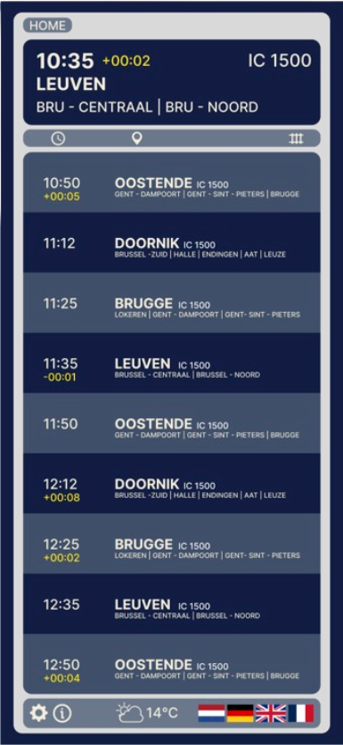

Week 8 — Tailwind & geavanceerde HTML/CSS
In de laatste week lag de focus op Tailwind CSS in combinatie met Figma en het verder verfijnen van responsive design. We bespraken hoe het concept van Tailwind in prototypes toegepast kan worden en hoe dit aansluit bij de visuele stijl in Figma.
Ik gebruikte deze kennis om mijn project definitief te stylen, kleuren, typografie en lay-out af te stemmen, en de schermen volledig responsive te maken voor verschillende apparaten. De nadruk lag op het combineren van visuele duidelijkheid met toegankelijkheid voor alle gebruikers.
Perronscherm - Iphone 16
Overzichtscherm - Iphone 16

Wagonscherm - Iphone 16